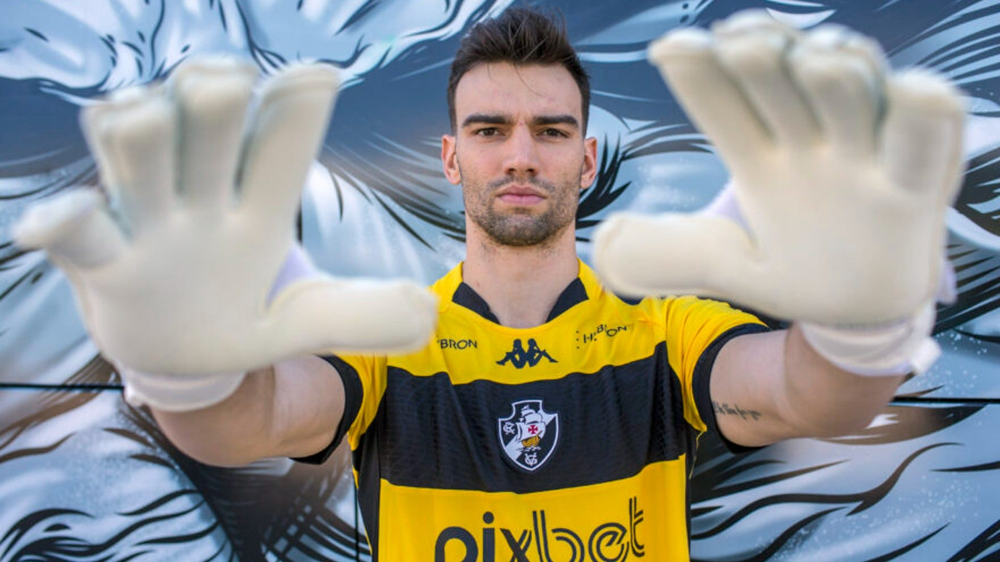
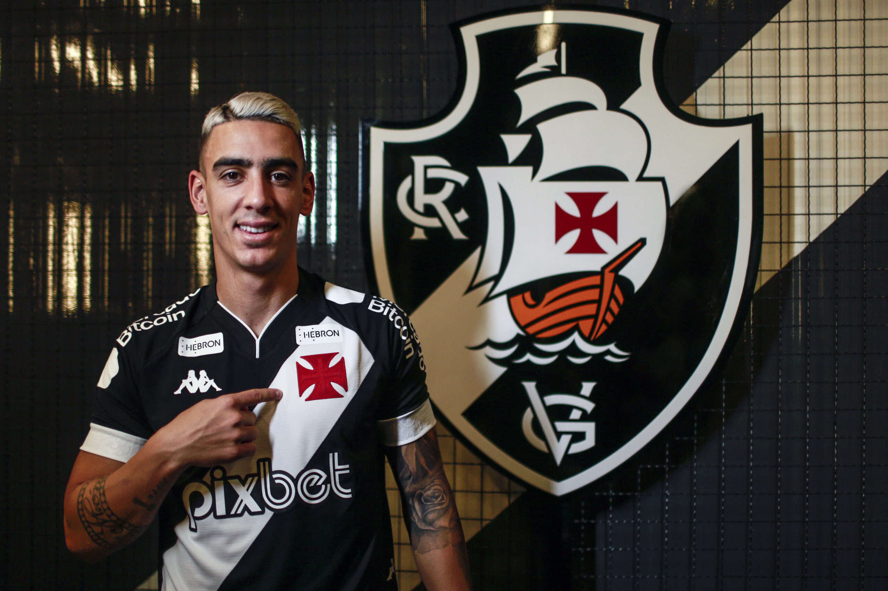
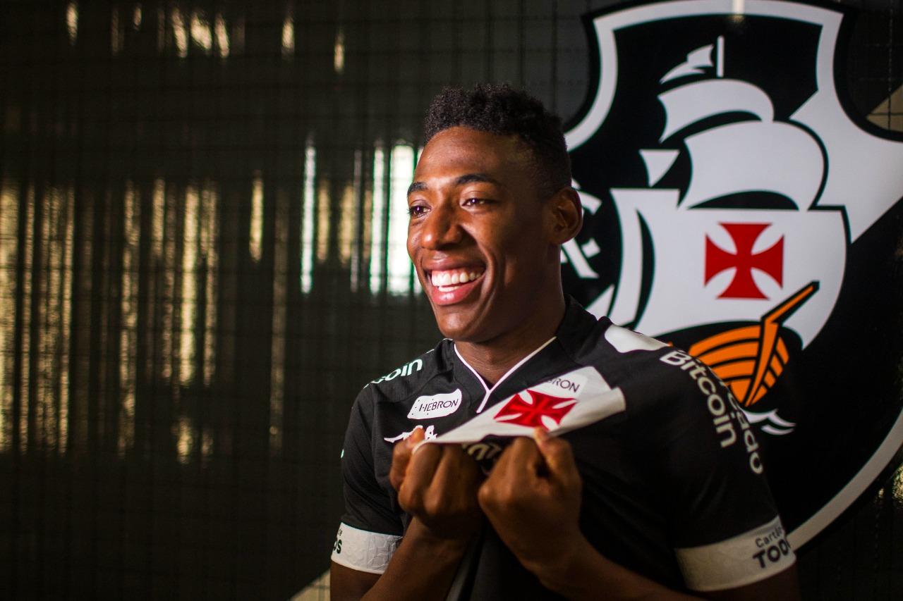

Time Cruzmaltino tem 4 Contratações para Temporada 2023



Vasco anuncia saída de Nenê, que vai se aposentar no fim do ano
Jogador vai voltar ao Vasco no início do próximo ano para assumir função fora dos gramados. "Uma história dessa tão linda não poderia acabar", afirma ele
Nenê se despediu de seus companheiros e funcionários de clube na tarde desta segunda, durante o treino no CT Moacyr Barbosa.
- Queria dizer que chegou o momento que eu vou parar de jogar pelo Vasco. Sabia que um dia isso ia chegar, a gente nunca está preparado. Quando você faz uma coisa com tanto amor, tanta paixão e um propósito... Vim para cá com um objetivo e acabou virando uma promessa, uma questão de palavra. Na primeira vez não consegui e disse que não ia parar e jogar enquanto não cumprisse essa promessa - disse ele, em vídeo divulgado pelo clube.
Nenê teve duas passagens pelo Vasco. A primeira foi entre 2015 e 2018, quando conquistou os títulos do Carioca e da Taça Guanabara em 2016 e da Taça Rio de 2017. Retornou ao clube no fim de 2021 e foi peça essencial na campanha do acesso no ano passado - foi dele, por exemplo, o gol da vitória por 1 a 0 sobre o Ituano, fora de casa, na última rodada.
Ao todo, Nenê tem 199 jogos oficiais com a camisa do Vasco. O clube, no entanto, inclui amistosos na contagem e considera que são mais de 200 partidas. Com as duas passagens, ele marcou 60 gols e foi o autor de 51 assistências.
Josh Wander tem dia relevante para os próximos passos da gestão do Vasco
Segunda-feira, 24/04/2023 às 08h03
Josh Wander, dono da 777 Partners e investidor da SAF do Vasco, tem hoje (24) um dia relevante para os próximos passos da gestão do clube. Na pauta, investimentos e estádio.
Boné e camarote no Maracanã
Josh não abriu mão do visual que combina terno e boné para assistir ao Vasco x Palmeiras no Maracanã.
Depois de passar cerca de 20 minutos à beira do gramado, no pré-jogo, ele viu a partida em
um dos camarotes do estádio.
Josh conversou com o CEO do Vasco, Luiz Mello, e o vice-presidente do clube, Carlos Osório. A impressão da festa foi das melhores.
O Vasco quer participar da concorrência pela permissão de uso do estádio, com duração de 180 dias e atualmente com Flamengo e Fluminense, mas planeja um passo maior, entrando na licitação do Maracanã.